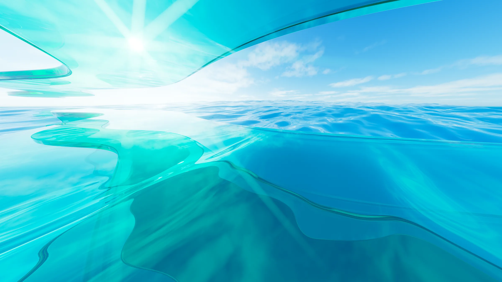
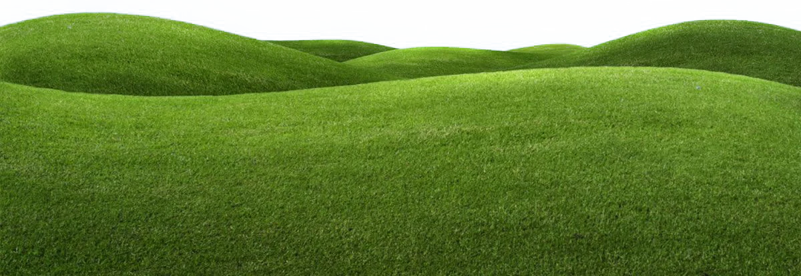
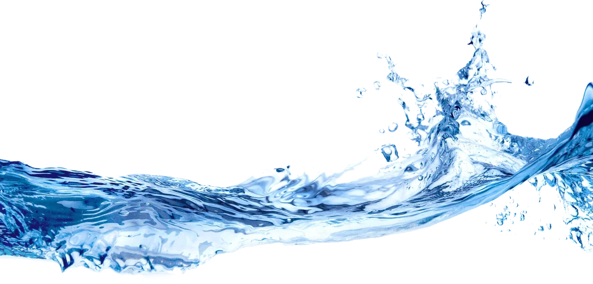
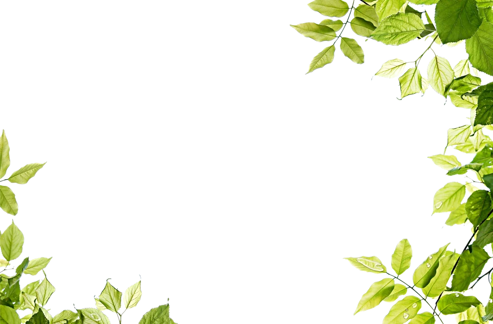

AIR / 01
Weightless
Cloud edges, bubbles and generous breathing room keep the page buoyant.
FULL AERO / FOUNDATION 01
A bright, weightless portfolio shaped by glass, water, air and the optimism of the late-2000s desktop. Part 1 sets the palette, typography, surfaces and image language before the shell is rebuilt.
Explore the foundation
 SCENE 01 / WATER + SUN
SCENE 01 / WATER + SUN
Sample surface Part 2 will carry this treatment into the real header and Home views.
The interface should feel like a sunlit desktop from another era: optimistic, tactile, a little magical — but never cluttered.
Cloud edges, bubbles and generous breathing room keep the page buoyant.
Cool translucency, crisp inner light and quiet blue shadows.

Lime hills and a measured flash of SUNSHINE orange keep the scene warm.
Cool atmospheric fields carry the page. Lime and SUNSHINE orange are the living accents. Ink stays deep enough for long-form reading on glass.
12.9:1
8.6:1
6.7:1
Orange is never used for small text on white. Primary buttons pair
#4A2600 ink with the orange fill.
One humanist sans family, four jobs. Light display sizes, calm UI text, and wide uppercase labels. Source Sans 3 carries the same voice when Segoe UI is unavailable.
300
Sunshine
in the clear.
600
Featured work & projects
400
Computer Science student at Mahasarakham University, focused on network engineering and practical cybersecurity.
600
MY CERTIFICATE / ABOUT ME / INFO ME
01 Headlines use tight tracking and 0.95 leading.
02 Body copy never drops below 16px on desktop.
03 The display face is the same family, not a novelty font.
Every pane needs a crisp edge, a top highlight, and enough fill to keep text readable over photography. Blur is atmosphere — not a replacement for contrast.
SURFACE LAB / ALL PANES ARE LIVE CSS + BACKDROP-FILTER
Use only for short, decorative labels over calm imagery.
The default for content panels. Ink on frost measures 12.9:1.
Active navigation, chips and quiet highlights borrow the water.
A cognac-blue moment for notes, footer bands and focus.
rgba(255,255,255,.72)
22px + 165% saturate
1px white @ 78%
inset 0 1px white
0 26px 70px -24px
Rounded controls with a soft sky gradient, an inner highlight, and one orange action that feels lit from within. The four existing tabs remain the navigation spine.
Active state uses the deep-sky gradient and a crisp top gloss.
Primary fill: #FFA31F. Text: #4A2600 at 6.7:1.
Satin white gradients and a 1px inner highlight. No operating-system logos.
Two-layer focus ring, 44px targets, and accessible label contrast.
Controls above are visual specimens. They become functional in Parts 2–4.
Two wallpapers for place, five PNGs for depth. Everything is compressed to WebP, transparency-trimmed and kept inside a 1.2 MB archive budget.
 WALLPAPER / ATMOSPHERE
bg-sky-hills.webp
Fixed page background, full-bleed shell.
WALLPAPER / HERO
hero-water-sun.webp
Home lead scene and glass lab backdrop.
PNG / DRIFT
fg-cloud.webp
Slow cloud pass behind panels.
PNG / GROUND
fg-hills.webp
Bottom anchor for the live shell.
PNG / AMBIENT
fg-bubbles.webp
Floating background or hero accent.
WALLPAPER / ATMOSPHERE
bg-sky-hills.webp
Fixed page background, full-bleed shell.
WALLPAPER / HERO
hero-water-sun.webp
Home lead scene and glass lab backdrop.
PNG / DRIFT
fg-cloud.webp
Slow cloud pass behind panels.
PNG / GROUND
fg-hills.webp
Bottom anchor for the live shell.
PNG / AMBIENT
fg-bubbles.webp
Floating background or hero accent.

PNG / FLOURISH fg-splash.webp Section divider or footer gesture.
PNG / FRAME fg-leaves.webp Soft foliage at section edges.7 assets · 2 wallpapers · 5 cutouts
All local, all compressed.
Full Aero is a visual language, not a skin copy. The atmosphere can be nostalgic while the content, code and identity stay entirely SUNSHINE.
All four tabs, the certificate, profile links, artwork and SUNSHINE name stay intact.
No Microsoft logos, default wallpapers or trademarks. The glass language is built from scratch in CSS.
Archive assets are marked for personal, non-commercial use. License or replace them before any commercial launch.
1.2 MB of archive imagery, WebP delivery, lazy loading below the fold and CSS effects instead of video.
Ink on frost measures 12.9:1. White on deep sky measures 8.6:1. Orange actions use dark ink.
Opaque glass fallback, reduced-motion support, and content stays visible if motion or JavaScript fails.
PERSONAL / NON-COMMERCIAL ASSET SET
Next we wire these tokens into the real site: the full-bleed Aero scene, a floating glass header, the SUNSHINE logo treatment and the four-tab navigation.
Open current portfolio